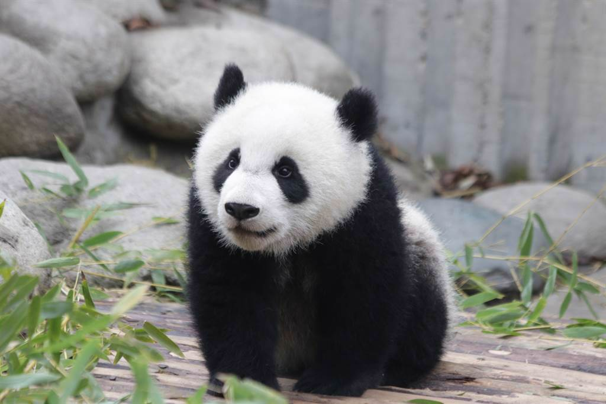
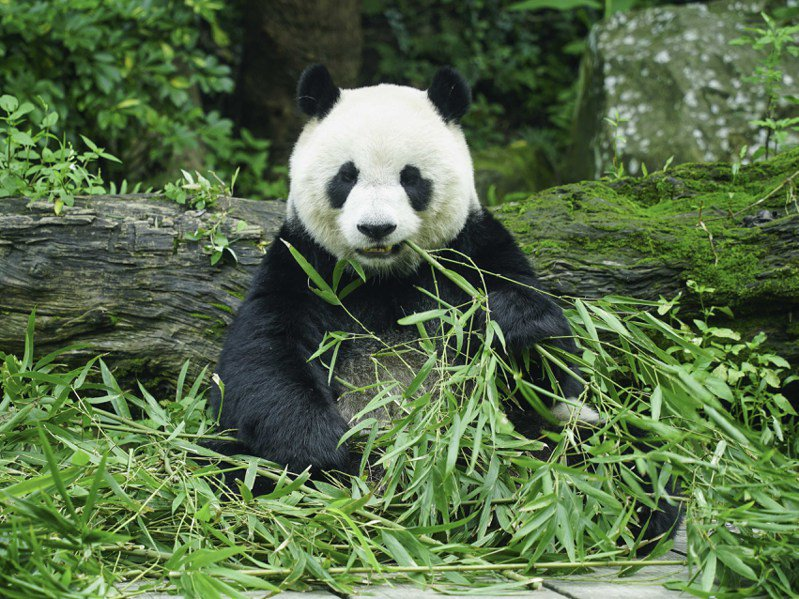
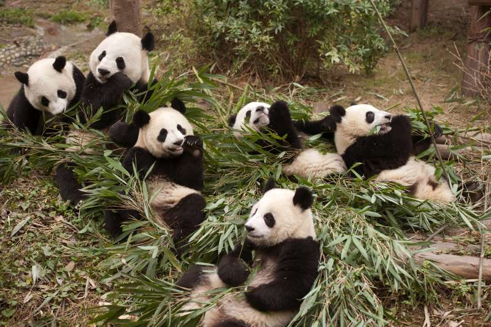
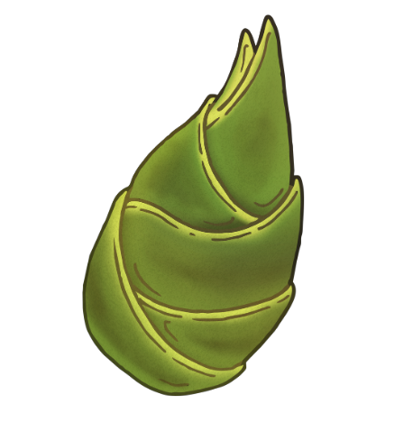
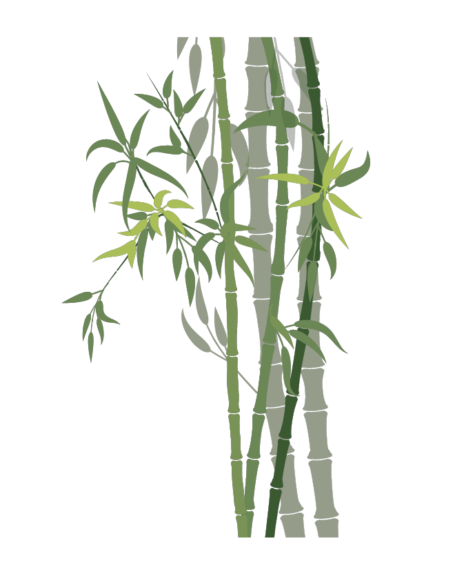
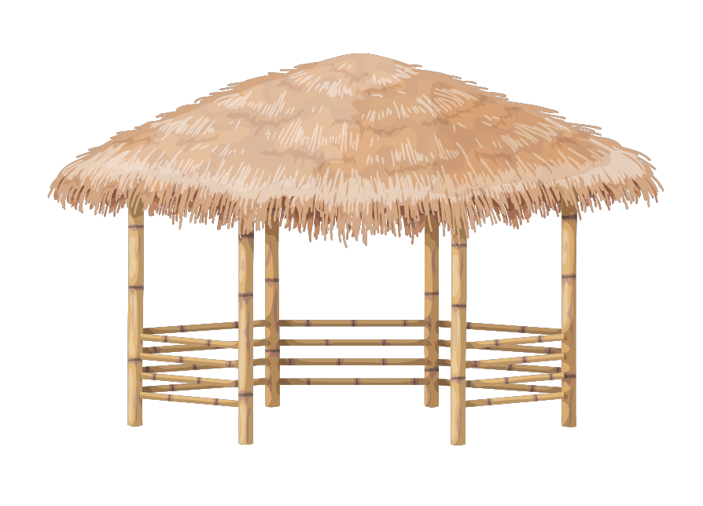

熊貓 Panda

熊貓

熊貓

熊貓
Previous
Next
性格：
熊貓性格孤僻，喜歡單獨行動獨自生活，有很
強的領地意識。如果發現有入侵者進入了自己
的領地，它會主動出擊，變得具有攻擊性。動
物園中的大熊貓由於長期的圈養生活讓它們逐
漸失去了這些天性。即使在動物園中也曾經發
生過大熊貓攻擊人類的事情。

食物：
大熊貓 99% 的食物都是竹子，可供大熊貓食
用的竹類植物共有12屬、60多種。 此外，野
生大熊貓還偶食一些動物屍體或其它植物。圈
養大熊貓主要以某一種或幾種低山平壩竹爲主
食，輔食是以谷物類爲主所調制的精飼料。竹
類是大熊貓生長發育、身體健康和正常繁育的
關鍵所在。
外表特徵&外觀：
屬於食肉目熊科的一種哺乳動物，體色為黑白
兩色。貓熊是中國特有物種，現存的主要棲息
地是中國中西部四川盆地周邊的山區和陝西南
部的秦嶺地區。大貓熊黑白相間的毛色和憨態
可掬的外表使其深受人們喜愛，在全世界亦有
大量粉絲。在1961年世界自然基金會成立時就
以大貓熊為標誌，大貓熊儼然已成為了瀕危物
種保護最重要的象徵。

分佈＆數量：
大熊貓曾廣泛分佈於中國長江、黃河和珠江三
大流域，包括從北京附近周口店至兩廣以及附
近的東南亞地區。而現在我們只能在秦嶺山系
、岷山山系、邛崍山系、涼山和大、小相嶺山
系找到它們。

生活型態＆習性：
熊貓主要棲息在中國的高山竹林中，包括四川
、甘肅和遼寧等地。它們適應寒冷、潮濕和多
雨的氣候，通常生活在海拔2000至3500米的
地區。熊貓通常是獨居的動物，每隻熊貓都擁
有自己的領域，領域的大小因環境資源的可用
性而有所不同。熊貓會使用味道和聲音來標記
領域界限。熊貓以竹子為主要食物來源，約有
99％的飲食來自竹子。它們以竹子的嫩葉、嫩
芽和竹節為食。熊貓具有特殊的消化系統，可
以處理竹子中難以消化的纖維。熊貓通常著地
食用竹子，而不是爬樹。它們具有特別的拇指
和腕關節，可以抓住竹子並將其握在手中，然
後使用牙齒剝去竹子的皮和葉子。熊貓是典型
的日行性動物，通常在清晨和傍晚活動。它們
花費大部分時間尋找食物，並花費大約10至16
個小時進食。雖然熊貓較少爬樹，但它們會在
樹上尋找遮蔽處休息。它們通常選擇竹子較密
集的樹冠或竹叢中的樹枝作為休息場所。雖然
熊貓主要是獨居的，但在繁殖季節和幼仔成長
期間，它們會與同類進行一些社交互動。
壽命： 大貓熊的平均壽命為 20 年。